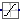

Internal blocks and functions that are usually of no interest for the user
The blocks in this package are internal that should usually not be utilized directly by the user (they are used as building blocks in "higher level" blocks).
Extends from Modelica.Icons.InternalPackage (Icon for an internal package (indicating that the package should not be directly utilized by user)).
| Name | Description |
|---|---|
| ComputationalDelay | Delay a clocked signal for at most one period, in order to model a computational delay |
| UniformNoise | Add band-limited uniform noise using a variant of the Wichmann-Hill algorithm |
| UniformNoiseXorshift64star | Add band-limited uniform noise based on a xorshift64* number generator |
| Quantization | DAC quantization effects |
|  Limiter | Limit the range of a signal |
| Pseudo random number generator |
Delay a clocked signal for at most one period, in order to model a computational delay
This block delays a clocked Real input signal by the fraction shiftCounter/resolution of the last interval. There is the restriction that shiftCounter/resolution ≤ 1.
Extends from Clocked.RealSignals.Interfaces.PartialClockedSISO (Block with clocked single input and clocked single output Real signals).
| Name | Description |
|---|---|
| Computational delay in seconds = interval() * shiftCounter/resolution | |
| shiftCounter | (min=0, max=resolution), computational delay = interval()*shiftCounter/resolution |
| resolution | Time quantization resolution of sample interval |
| Name | Description |
|---|---|
| u | Connector of clocked, Real input signal |
| y | Connector of clocked, Real output signal |
Add band-limited uniform noise using a variant of the Wichmann-Hill algorithm
This block adds uniformly distributed noise in the range noiseMin … noiseMax to the clocked Real input signal and provides the sum as clocked Real output signal.
The Integer[3] parameter vector firstSeed is used to initialize the basic random number generator. The 3 elements of firstSeed need to be in the range [0, 255]. The use of the same seed vector will lead to the same sequence of numbers when these are computed serially. This is usually not desired. Therefore, for every usage of block Noise a different firstSeed should be defined.
This noise generator is based on a function that generates a random real number uniformly in the semi-open range [0.0, 1.0). The function uses the standard Wichmann-Hill generator, combining three pure multiplicative congruential generators of modulus 30269, 30307 and 30323. Its period (how many numbers it generates before repeating the sequence exactly) is 6,953,607,871,644. While of much higher quality than the rand() function supplied by most C libraries, the theoretical properties are much the same as for a single linear congruential generator of large modulus. For more details, see the underlying function Internal.random.
The following
example
samples zero signal with a periodic clock of 20 ms period, and adds
noise in the range from -0.1 … 0.1:
 |
 |
|
| model | simulation result |
Extends from Clocked.RealSignals.Interfaces.PartialNoise (Interface for SISO blocks with Real signals that add noise to the signal).
| Name | Description |
|---|---|
| noiseMax | Upper limit of noise band |
| noiseMin | Lower limit of noise band |
| firstSeed[3] | Integer[3] defining random sequence; required element range: 0..255 |
| Name | Description |
|---|---|
| u | Connector of clocked, Real input signal |
| y | Connector of clocked, Real output signal |
Add band-limited uniform noise based on a xorshift64* number generator
This block adds uniformly distributed noise in the range noiseMin … noiseMax to the clocked Real input signal and provides the sum as clocked Real output signal.
It is based on the xorshift64* algorithm. For more details, see the documentation to Xorshift64star.
The following
example
samples zero signal with a periodic clock of 20 ms period, and adds
noise in the range from -0.1 … 0.1:
 |
 |
|
| model | simulation result |
Extends from Clocked.RealSignals.Interfaces.PartialNoise (Interface for SISO blocks with Real signals that add noise to the signal).
| Name | Description |
|---|---|
| noiseMax | Upper limit of noise band |
| noiseMin | Lower limit of noise band |
| globalSeed | Global seed to initialize random number generator |
| localSeed | Local seed to initialize random number generator |
| Name | Description |
|---|---|
| u | Connector of clocked, Real input signal |
| y | Connector of clocked, Real output signal |
DAC quantization effects
The clocked Real input signal is value discretized (the discretization is defined by parameter bits).
Extends from Clocked.RealSignals.Interfaces.PartialClockedSISO (Block with clocked single input and clocked single output Real signals).
| Name | Description |
|---|---|
| quantized | = true, if quantization effects shall be computed |
| yMax | Upper limit of output |
| yMin | Lower limit of output |
| bits | Number of bits of quantization (if quantized = true) |
| Name | Description |
|---|---|
| u | Connector of clocked, Real input signal |
| y | Connector of clocked, Real output signal |
Limit the range of a signal
The Limiter block passes its input signal as output signal as long as the input is within the specified upper and lower limits. If this is not the case, the corresponding limits are passed as output.
Extends from Clocked.RealSignals.Interfaces.PartialClockedSISO (Block with clocked single input and clocked single output Real signals).
| Name | Description |
|---|---|
| uMax | Upper limits of input signals |
| uMin | Lower limits of input signals |
| Name | Description |
|---|---|
| u | Connector of clocked, Real input signal |
| y | Connector of clocked, Real output signal |
 Modelica.Clocked.RealSignals.Sampler.Utilities.Internal.random
Modelica.Clocked.RealSignals.Sampler.Utilities.Internal.randomPseudo random number generator
Random generates a sequence of uniform distributed pseudo-random numbers. The algorithm is a variant of the multiplicative congruential algorithm, known as the Wichmann-Hill generator:
x(k) = (a1*x(k-1)) mod m1 y(k) = (a2*y(k-1)) mod m2 z(k) = (a3*z(k-1)) mod m3 U(k) = (x(k)/m1 + y(k)/m2 + z(k)/m3) mod 1
This generates pseudo-random numbers U(k) uniformly distributed in the interval (0,1). There are many forms of generators depending on the parameters m (prime numbers) and a. The sequence needs an initial Integer vector {x,y,z} known as the seed. The use of the same seed will lead to the same sequence of numbers.
Remarks
Random number generators (RNG) are pseudo-functions which are not true functions but algorithms which deliver a fixed sequence of (usually Integer) numbers which should have a very large period before they repeat itself and appropriate statistic properties such that the sequence appears to be a random draw. For real-valued random numbers, the integers are scaled to the real interval 0.0-1.0. They result in a uniformly distributed random variate between 0-1, which has to be transformed to give a random variate of a wanted distribution. There are two types of techniques for transforming random variates:
Acceptance-Rejection techniques throw away some of the generated variates and are thus less efficient. They can not be avoided for all distributions. A good summary about random number generation and most of the transformation techniques used below is given in:
Discrete Event SimulationSome of the other references are quoted below.
WICHMANN-HILL RANDOM NUMBER GENERATOR
Wichmann, B. A. & Hill, I. D. (1982)
Algorithm AS 183:
An efficient and portable pseudo-random number generator
Applied Statistics 31 (1982) 188-190
see also:
Correction to Algorithm AS 183
Applied Statistics 33 (1984) 123
McLeod, A. I. (1985)
A remark on Algorithm AS 183
Applied Statistics 34 (1985),198-200
In order to completely avoid external functions, all seeds are
set via parameters. For simulation purposes this is almost
always the desired behaviour.
Translated by Hubertus Tummescheit from Python source provided by
Guido van Rossum translated from C source by Adrian Baddeley.
http://www.python.org/doc/current/lib/module-random.html
R A N D O M V A R I A B L E G E N E R A T O R S
distributions on the real line:
------------------------------
normal (Gaussian) 2 versions
Copyright © Hubertus Tummescheit and Department of Automatic Control, Lund University, Sweden.
This Modelica function is free software; it can be redistributed and/or modified under the terms of the BSD-3-Clause license.
Extends from Modelica.Icons.Function (Icon for functions).
| Name | Description |
|---|---|
| seedIn[3] | Integer vector defining random number sequence, e.g., {23,87,187} |
| Name | Description |
|---|---|
| x | Random number between 0 and 1 |
| seedOut[3] | Modified seed to be used for next call of random() |